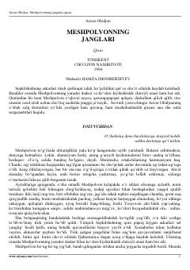

MJOta-onasini qutqarishga otlangan marder va quvnoq bola Meshpolvonning sarguzashtlari.
O‘zbek adabiyotining atoqli namoyandasi Anvar Obidjon qalamiga mansub mazkur qissada ota-onasini qullikdan ozod etish uchun yo‘lga chiqqan qiziqarli va mard bola Meshpolvonning sarguzashtlari hikoya qilinadi. Asar xalq dostonlari ruhida yozilgan bo‘lib, unda ezgulik va adolat tantanasi quvnoq va ta’sirli tarzda ochib berilgan.